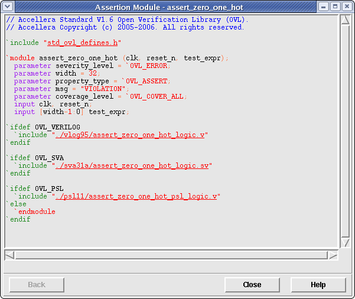

The Assertion Source Viewer window allows the user to see the source code for the current assertion in the Verbose Assertion Coverage window. To view this window, simply click the Show Code button in the Verbose Assertion Coverage window. Figure 1 shows a zero_one_hot OVL assertion code with syntax highlighting applied.
Figure 1. Assertion Source Viewer Window
The source code for the current assertion will be automatically displayed in the text viewer when the window is created. However, the source code will be displayed as it is found in the file system, without preprocessing applied to it. This means that included files will not be displayed in an in-lined fashion. To view included files, simply click on the included filename (it will be underlined). This will cause the included file to replace its includer in the text viewer. An infinite number of includes may be traversed in this manner. To go back to the file that included the current file, simply click on the Back button located in the bottom left-hand corner of the window. This will cause the current source code to be replaced with its "parent" source code.
Note that the Back button will be disabled when the top-level assertion file is currently displayed.
Clicking the Close button will cause only this window to be closed.
Clicking the Help button will cause this help page to be displayed in a web brower.